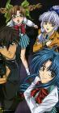

Full Metal Panic!
Stephen Klancher
...has seen 16
...has seen 0.3 hours
...has not seen 0.2 hours

Timeline
Most Recent:
The Man from the South / A Fruitless Lunchtime
First Unseen:
Zero Hour (# 17)
...has seen 16
...has seen 0.3 hours
...has not seen 0.2 hours
Timeline
Most Recent:
The Man from the South / A Fruitless Lunchtime
First Unseen:
Zero Hour (# 17)


The Man from the South / A Fruitless Lunchtime (2003) Airs on 2003-08-25
S2 - E1 of Full Metal Panic!
S2 - E1 of Full Metal Panic!
The Hamburger Hill of Art / Single Minded Stakeout! (2003) Airs on 2003-09-08
S2 - E3 of Full Metal Panic!
S2 - E3 of Full Metal Panic!
The Hard Sell Fetish / The Patient of Darkness (2003) Airs on 2003-09-15
S2 - E4 of Full Metal Panic!
S2 - E4 of Full Metal Panic!
The Pure Yet Impure Grappler / Trespassing on Good Faith (2003) Airs on 2003-10-06
S2 - E5 of Full Metal Panic!
S2 - E5 of Full Metal Panic!
A Goddess Comes to Japan (Part 1: The Suffering) (2003) Airs on 2003-10-20
S2 - E7 of Full Metal Panic!
S2 - E7 of Full Metal Panic!
A Goddess Comes to Japan (Part 2: The Hot Spring) (2003) Airs on 2003-10-27
S2 - E8 of Full Metal Panic!
S2 - E8 of Full Metal Panic!
Stephen Klancher: SEEN
Hostility That Crossed Paths/Lunchtime of Futility (2003) Airs on 2003-11-17
S2 - E14 of Full Metal Panic!
S2 - E14 of Full Metal Panic!
Stephen Klancher: SEEN